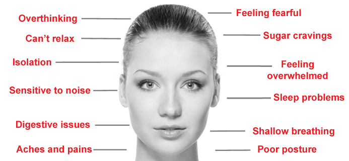

What Is a Nervous Breakdown?
Nervous breakdown is a term that is sometimes used to describe symptoms of intense mental and emotional distress. These feelings make it difficult or even impossible to carry on normal functioning and complete daily tasks.
Many misconceptions surround the term "nervous breakdown." While it is often used to describe periods when normal functioning is disrupted by extreme stress, the term is not considered an actual psychiatric condition or medical diagnosis.
Instead, the term nervous breakdown is a colloquial catchall intended to describe symptoms that may represent a number of different psychiatric conditions. The key characteristic of a "nervous breakdown" is that the symptoms are intense and make it very difficult for the person to function normally.
Symptoms
While the term nervous breakdown lacks clinical significance, there are a number of physical and mental symptoms that are most often associated with such periods of intense distress. These include, but are not limited to:
- Anxiety or panic attacks
- Depression
- Difficulty sleeping
- Emotional numbness
- Feelings of physical illness
Because nervous breakdown is such a nebulous term, it may indicate symptoms of anything from depression to anxiety to schizophrenia. Use of the term often suggests that a person is having a great deal of trouble coping and has "checked out" from their normal routine. They may have stopped socializing or might be unable to manage daily self-care routines including eating, getting out of bed, or showering.
The symptoms people experience during a "breakdown" may range from mild to much more severe. Some people may experience thoughts of suicide or self-harm during a breakdown period.
There are a number of factors that can contribute to what is referred to as a nervous breakdown. Underlying mental health conditions are often a contributing factor, but life stresses often also play a role.
Sometimes this stress is chronic and seems to build up over time until a person simply cannot cope anymore. In other cases, crisis situations can trigger an acute period of intense distress that leads to symptoms of a breakdown.
Some factors that might contribute to a breakdown include:
- Abuse
- Academic problems or pressures
- Death of a loved one
- Divorce
- Financial problems<
- Job loss
- Moving
- Trauma
- Work-related stress
While some people are able to cope with such struggles, others may be less resilient when faced with extreme stress. Poor coping skills, lack of self-care, low social support, poor interpersonal relationships, unhealthy coping mechanisms, and untreated mental illness may all contribute to the onset of what people refer to as a nervous breakdown.

Origins
According to Dr. Nwayieze Chisara Ndukwe, Psychiatry Fellow at Mount Sinai Beth Israel, the term "nervous breakdown" gained popularity in the early 20th century. "Colloquially, it was usually used to describe a major personal crisis of almost any kind," she says.
She goes on to explain that "following the First and Second World Wars, when physicians had to treat the enormous psychological toll endured by combatants, focus shifted from mental institutions to a more clinical perspective. Further, a disease model was developed that proposed to explain 'nervous breakdowns' which would later be called the 'psychological distresses,' encountered by soldiers."
She says that this would later give rise to the Diagnostic and Statistical Manual of Mental Disorders (DSM), the manual psychiatrists use to assist in diagnosing mental health conditions. "The DSM then gave specific names to specific disorders that in the past would have all been lumped into 'nervous breakdown.' As mental health became better understood and less stigmatized, the general population’s exposure and adoption of these more specific terms (depression, anxiety, panic attack, etc.) became more commonplace."
Lastly, she notes that "we now know there are several situations, genetic factors, and experiences that are more commonly associated with a decline in functioning, and result in a 'nervous breakdown,' but there are also several factors that are unknown."
"Typically, it’s used in the lay press to denote some acute episode of psychiatric symptoms," says Dr. Sean Luo, Assistant Professor of Clinical Psychiatry, Columbia University Medical Center, "however, this is not a medical term and...it’s certainly not clinically precise."
The use of the term nervous breakdown declined after the 1960s. Although it is outdated, it is still used often as a catchphrase to refer to emotional or psychological distress—usually by those not familiar with mental health.